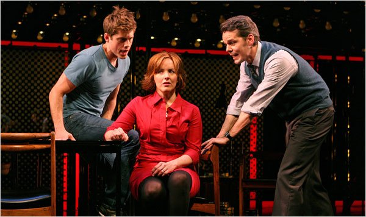
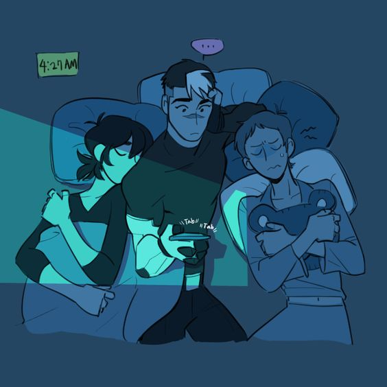
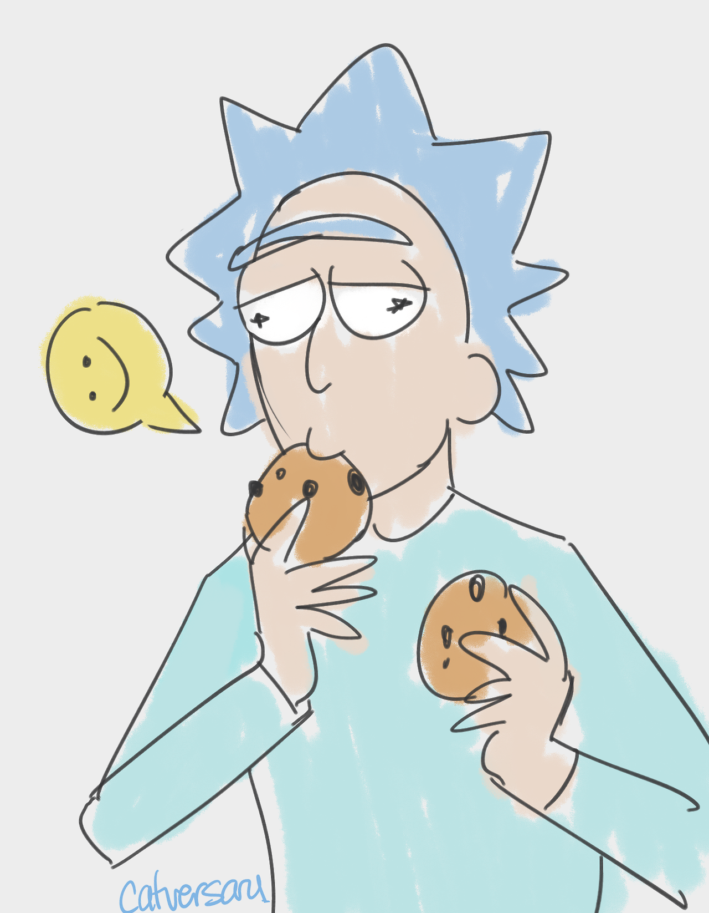

***Believe it or not, I was actually in Drama for one year! I was in a play, too!
Hobbies
- Watching contemporary musicals
- Crying to contemporary musicals
- Just crying in general because of school and life
- Watching anime
- Watching the Emoji Movie
- Liking the Emoji Movie unironically
- Scrolling through my tumblr feed
- Writing creatively
- Sketching and drawing

***Note: This image is from the Broadway musical, "Next to Normal"
Most Listened-To Songs
- "Just Another Day" by the Cast from "Next to Normal"
- "Sucks to be Me" by the Cast from "Avenue Q"
- "Astonishing" by Sutton Foster from "Little Women
- "So Much Better" by the Cast from "Legally Blonde"
- "Aaron Bur, Sir" by the Cast from "Hamilton"
- "Left Behind" by Jonathan Groff from "Spring Awakening"
Fun Facts about Me
- I've never been on an airplane before!
- I once ran and smashed my nose into the same tree six times at Mile Square Park.
- I knew how to do a "cartwheel" once.
- My favorite youtuber is Jacksfilms.
Favorite Quote
"Life is so full of unpredictable beauty and strange surprises. Sometimes that beauty is too much for me to handle. Do
you know that feeling? When something is just too beautiful? When someone says something or writes something or plays
something that moves you to the point of tears, maybe even changes you."
- Mark Oliver Everett, lead singer of Eels

***Note: Besides musicals and anime, I also watch Voltron.

***Note: I also watch Rick and Morty.